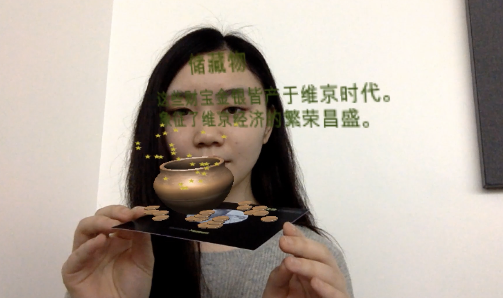

- 
"Anything not interactive will appear to be broken." (Kevin Kelly, 2015)
This augmented reality work is developed for Yorkshire Museum to promote a selection of key artifacts for the Viking exhibition. It adopted a mixed interface of tangible paper marker and virtual information layer. Having the potential museum visitors as the target audience, the installation was aimed to provide an enjoyable, informative, and interactive experience to users, which would hopefully help enhance their knowledge of the Viking culture.